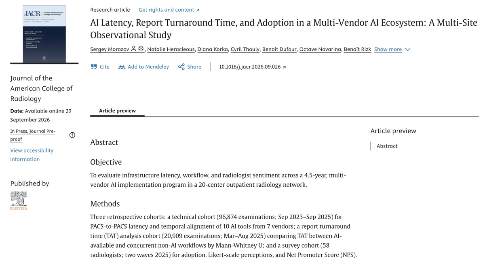

Research page · Sergey Morozov, MD PhD MPH
Right result, right moment: monitoring that helps radiology AI deliver
What a 20-center network learned in 4.5 years, and five things any department can measure.
In a 20-center network, 91% of radiologists adopted AI, and where AI was integrated into the reading workflow, reports were finalized faster. The gap: 7.2% of AI results still arrived after the report was finalized, mostly because of data routing rather than the algorithm. Timing is something a department can measure every day and improve with routing and integration.
What works
Morozov et al., Journal of the American College of Radiology, 2026. Multi-vendor AI program, 3R Swiss Imaging Network, 20 centers: ~389,000 AI-processed exams, 58 radiologists.
| 91% | of radiologists adopted AI (active adoption 91.4%, 53 of 58) |
| -26% / -18% | lower median report turnaround time where AI was integrated into the reading workflow: trauma radiography and knee MRI, adjusted for radiologist |
| 0.69 FTE | estimated annual reporting capacity from trauma radiography alone (0.46 FTE radiologist-adjusted), at an annual platform cost equivalent to 23-25% of one radiologist FTE salary |
| 80.6% | of AI results were available before the report was created |
What needs work, and how to fix it
Observational study: associations, not causation.
Five actions for your department
- Measure the share of AI results available before reporting, and the Too Late rate. For every AI-processed exam, compare two HL7 timestamps: when the AI result became available and when the report was created and finalized.
- Set a time-to-display target in contracts and acceptance tests: the maximum minutes from end of scan to AI result on the reading screen, per modality.
- Prefer push routing and integration. Send studies to AI automatically at acquisition and return results into the tools radiologists already use. Routing, not the algorithm, is where most of the time goes.
- Review latency stability every quarter for each AI solution, with versioned metric definitions and radiologist feedback, and decide what to tune, upgrade or replace.
- Survey radiologists quarterly or every six months, not less often: trust, quality, productivity and a recommendation score for each tool, and share the measured results with them.
A monitoring set in three layers
The paper proposes monitoring deployed AI with metrics that come from data every department already has, plus a short survey:
Reviewed quarterly in a Plan-Do-Check-Act cycle, this set supports the post-market monitoring that the EU AI Act requires for high-risk AI.
Measure it in your department
Open-source code too-late-rate (Python, Apache-2.0) computes latency, the arrival of each AI result relative to the report (including the Too Late rate) and a quarterly stability flag from HL7 timestamps. The public code release will be linked here.
Read the article
- Journal version: doi.org/10.1016/j.jacr.2026.09.026
- Accepted manuscript, CC BY-NC-ND 4.0: read online (HTML) · PDF · plain text (Markdown)
Morozov S, Heracleous N, Korka D, Thouly C, Dufour B, Novarina O, Rizk B. AI Latency, Report Turnaround Time, and Adoption in a Multi-Vendor AI Ecosystem: A Multi-Site Observational Study. J Am Coll Radiol. 2026. doi:10.1016/j.jacr.2026.09.026

Cite this study
Morozov S, Heracleous N, Korka D, Thouly C, Dufour B, Novarina O, Rizk B. AI Latency, Report Turnaround Time, and Adoption in a Multi-Vendor AI Ecosystem: A Multi-Site Observational Study. J Am Coll Radiol. 2026. doi:10.1016/j.jacr.2026.09.026
Download: BibTeX · RIS (EndNote, Zotero, Mendeley). Please cite the published article by its DOI.
Images for your talks and posts
Four ready-made summary images, redrawn from the authors' data. Each carries the citation, the DOI and a QR code to this page.
| When the AI result arrives | Slide 16:9 |
| Monitoring that helps AI deliver: three layers | Slide 16:9 |
| Four key numbers | Square, LinkedIn |
| Four key numbers | Portrait, Instagram |


All four as one PDF · Share this page on LinkedIn
For department and network leaders
A two-page brief: what worked, what needs work, and five things to measure in your own department. Executive brief (PDF)
Use of these materials
The accepted manuscript and the images are shared under CC BY-NC-ND 4.0. You may read, print and share them unchanged, show them in non-commercial teaching and talks, and post them on social media, always with credit (authors, title, journal, DOI, licence). You may not share changed versions or use them commercially, for example in vendor sales material, paid courses or marketing. For other uses of the article, request permission from the publisher (Elsevier). For other uses of the images or the brief, contact the author. The publisher's PDF is not covered by this licence; the published article is the version of record.
Talks on this topic
Upcoming
- CLINICCAI at MICCAI 2026, Strasbourg, 29 September 2026
- EuSoMII Annual Meeting 2026, Heraklion, 10 October 2026: "Temporal Misalignment Between AI Output Delivery and Radiologist Workflow"
- IMAGINE Annual Event 2026, Philips Stadium, Eindhoven, 26 October 2026, 10:00 CET: keynote "From clearance to clinical practice: Closing the gap between large-scale AI clearances and routine departmental use" · programme
- RSNA 2026, Chicago, 30 November 2026: poster
Past
- HLTH.rad Stage, HLTH Europe, Amsterdam, 15 to 18 June 2026: "What are we actually getting from AI? Seven years, 100+ centers, one honest answer"
- HaDEA EEHRxF Workshop 1, Interoperability and Technical Standards, Panel 1, 24 April 2026: "EHR Interoperability in Practice: Lessons from Radiology"
Disclosures
Funding and conflicts of interest are declared in the article. S.M. provides R&D consulting services to 3R Swiss Imaging Network via Medlogic.